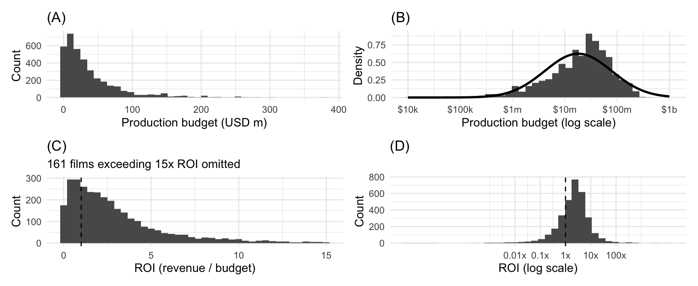
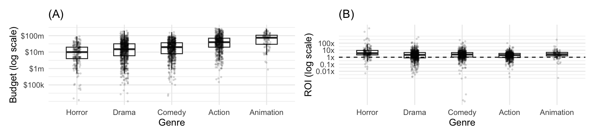
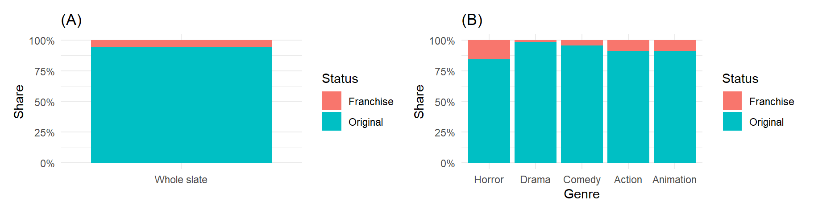
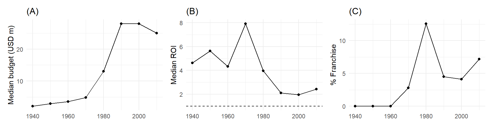
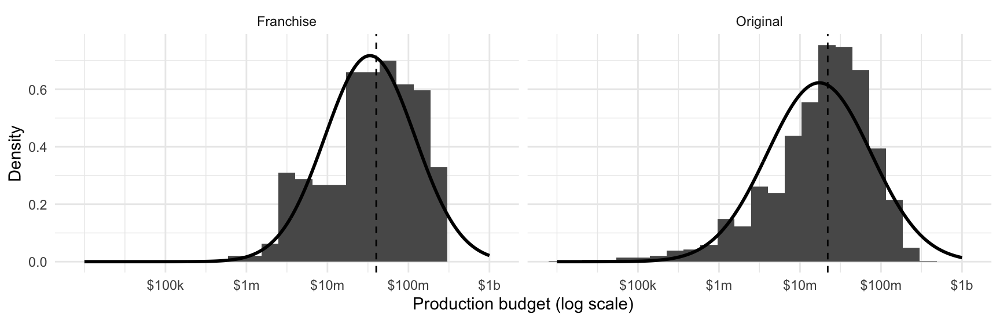
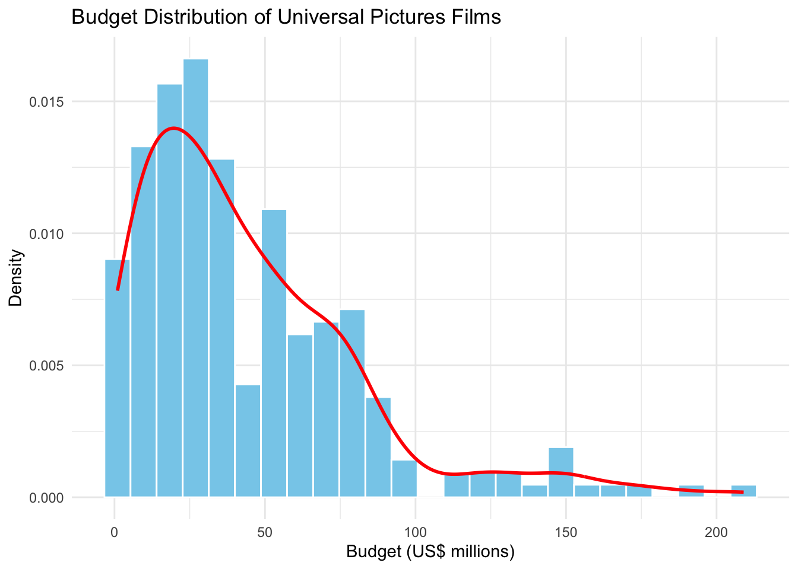
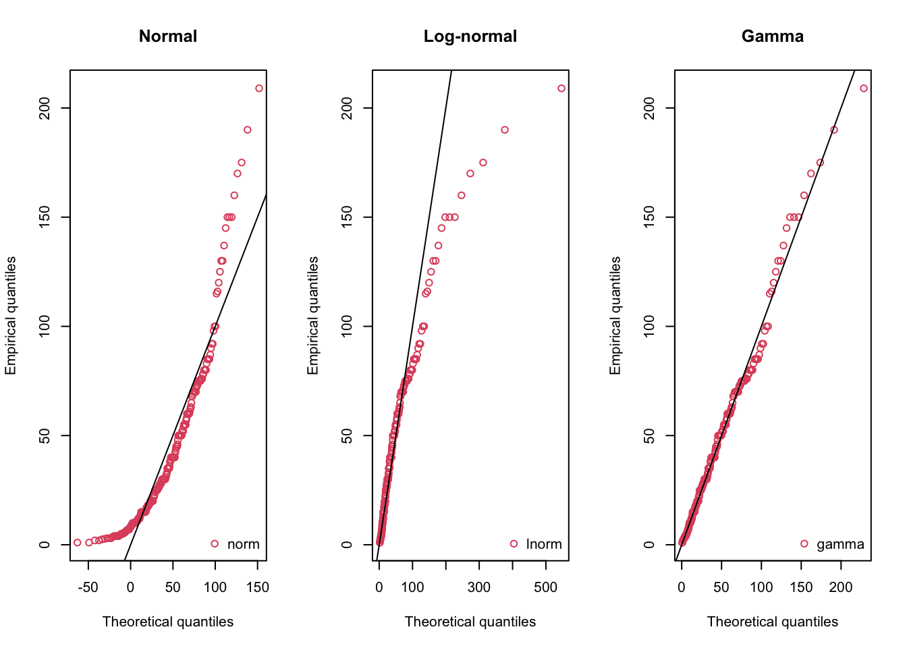

| Variable | N | Missing | Mean | SD | Min | Q1 | Median | Q3 | Max |
|---|---|---|---|---|---|---|---|---|---|
| Budget (USD m) | 3,731 | 1,072 | 37.4 | 42.7 | 0.0100 | 8.85 | 24.0 | 50.0 | 380 |
| ROI (revenue / budget) | 3,214 | 1,589 | 11.1 | 240 | 0.000000522 | 1.03 | 2.30 | 4.42 | 12,900 |
| log10 budget | 3,731 | 1,072 | 7.26 | 0.640 | 4.00 | 6.95 | 7.38 | 7.70 | 8.58 |
ETC2420/5242 Assignment 2
Meridian Film Studios Slate Analysis
Task 1: Slate Health Check
1a Data quality audit and cleaning decisions
The data audit identified missing and placeholder financial values. Zero is used throughout the file as a stand-in for “unknown”: 1,037 films (21.6%) record a budget of exactly zero, 35 a positive budget below the USD 10,000 floor, and 1,427 zero revenue, while roi is missing on exactly those same zero-budget rows (TRUE). Identifiers are otherwise clean, with 0 duplicate IDs and only 3 repeated titles. Budgets below USD 10,000 and revenue of zero are therefore recoded as missing, and ROI is recomputed as revenue_c / budget_c rather than read from the file’s own column. That missingness is not random: budget coverage is 46.1% in Documentary against 90.6% in Adventure, 89.6% for franchises against 77.0% for originals, and falls from 92.6% in the 1950s to 75.3% in the 2000s. After cleaning, 3,731 films (77.7%) have a usable budget and 3,214 (66.9%) a usable ROI.
1b Overall distribution of budget and ROI

Panel A of Figure 1 shows raw budget heavily skewed right: median budget is USD 24.0 million versus a mean of USD 37.4 million and a maximum of USD 380 million. On a log-10 scale (Panel B), the distribution is approximately normal. Panel C shows ROI: median ROI is 2.30, with IQR spanning 1.03 to 4.42. About 24.4% of films sit below 1x ROI.
1c Slate composition by genre and franchise status
| Franchise status | Films | Med. budget, USD m | Med. ROI | % recouped | % revenue | % budget |
|---|---|---|---|---|---|---|
| Franchise | 221 | 40 | 3.36 | 94.1 | 14.2 | 11 |
| Original | 2993 | 25 | 2.21 | 74.2 | 85.8 | 89 |


Horror is the cheapest focus genre (median USD 10 m) and most lucrative (median ROI 3.72, 87.8% recouped). Animation is expensive (median USD 75 m) but reliable (81.8% recouped). Drama performs weakest (median ROI 2.16). Franchise films constitute 5.4% of titles (Figure 3). Among complete cases (Table 2), franchise titles take 11.0% of budget while yielding 14.2% of revenue, outperforming originals on recoupment rate (94.1% vs 74.2%).
1d Trends over time and summary for the Head of Production

Decadal figures show median budgets peaking at USD 28 million in the 1990s/2000s and stabilizing since. However, median ROI declined steadily from a peak of 7.93 in the 1970s to 1.97 in the 2000s (Figure 4).
Summary for the Head of Production
Only 77.7% of films have usable budgets and 66.9% usable ROI after treating placeholder financial values as missing. Coverage differs by genre, franchise status and decade, so comparisons may be affected by selection. Median budget is USD 24 million and median ROI is 2.30; 24.4% of observed films fail to recover their production budget. Medians and log scales better describe these skewed distributions than means.
Horror combines low budgets with relatively high recoupment, while franchises recover production budgets more often than originals (94.1% versus 74.2% among complete cases). These patterns support selective investigation of horror and franchise projects, rather than guaranteeing their success. Median ROI fell from 7.93 in the 1970s to 1.97 in the 2000s before recovering to 2.42 in the 2010s. Historical selection and unadjusted dollar values limit comparisons across decades; box-office revenue also excludes marketing, distribution and other costs.
Task 2: Franchise vs. Original — Investment Strategy
2a Comparing the two budget distributions

Figure 5 compares the 233 franchise and 3,498 original films that carry a usable budget. Both are strongly right-skewed in raw dollars and approximately symmetric on a log-10 scale, so the two groups differ mainly in location and spread, although originals show a longer lower tail. The fitted normal curve is a reasonable approximation in the centre of each distribution, but it overstates the franchise distribution above roughly USD 300 million, where the data are sparse.
Franchises are funded higher across the body of the distribution: the median is USD 40.0 million against USD 22.0 million, about 1.8 times as high, and the gap repeats at the lower quartile (USD 15.0 million against USD 8.0 million), the upper quartile (USD 90.0 million against USD 50.0 million) and the 90th percentile (USD 150 million against USD 84 million). Spread runs the other way: originals are the more dispersed group on the log scale, with a standard deviation of 0.64 against 0.56; they reach lower at the bottom, with a tenth percentile of USD 2.5 million against USD 5.0 million; and the single largest budget in the file belongs to one original film, at USD 380 million against USD 280 million for the largest franchise.
2b A 95% interval estimate for the difference in medians
| Quantity | Estimate |
|---|---|
| Observed difference (USD m) | 18.0 |
| Bootstrap standard error (USD m) | 3.74 |
| 95% percentile interval (USD m) | 9.0 to 26.0 |
The observed difference in median budget, franchise minus original, is USD 18.0 million. Resampling 20,000 times within each group gives a bootstrap standard error of USD 3.74 million and a 95% percentile interval of USD 9.0 million to USD 26.0 million (Table 3). The 95% bootstrap interval lies entirely above zero, providing evidence that the population median budget is higher for franchise films than for original films. It is nonetheless wide relative to the estimate, which is expected given only 233 franchise films and a heavily skewed budget variable, so the gap is better read as a substantial difference in the median budget than as a precise figure.
2c Does the evidence support leadership’s concern?
The cost half of the concern holds up. Franchises are funded higher at the median, at both quartiles and at the 90th percentile, and the interval in Table 3 provides evidence that franchise films have a higher population median budget. A typical original film is smaller than a typical franchise film at every quantile reported, so “the original slate is cheaper” is correct as stated.
What does not hold up is the description of that slate as “mostly small, low-budget projects”. Only 26.8% of original films carry a budget below USD 10 million, against 17.6% of franchises, and even on the more generous reading of “small” as under USD 20 million, fewer than half of originals qualify (44.8%). The middle half of the original slate runs from USD 8.0 million to USD 50.0 million, which is mid-budget rather than micro-budget. Originals are also the more dispersed group, as Figure 5 shows, but that extra spread sits at the cheap end of the range rather than the top.
The revenue premise is not supported. Among the 3,214 films with complete financials, franchise titles are only 6.9% of the slate, take 11.0% of production budget and generate 14.2% of revenue. A group producing 14.2% of revenue is a valuable group, but it is not carrying the studio, and describing it that way overstates both its current weight and the risk of shifting the slate towards originals. What the franchise group genuinely provides is reliability rather than volume: 94.1% of franchise titles recoup their production budget against 74.2% of originals.
2d Recommended strategy
Keep the franchise pipeline. Franchise titles convert 11.0% of production budget into 14.2% of revenue and recoup at 94.1%, against 74.2% for originals. Cutting the pipeline to make room for originals would trade a dependable engine for a cheaper but more variable investment, and nothing in the evidence requires that trade.
Grow the original slate selectively. The comparison does not say originals are a bad investment; it says they are cheaper and more variable. The lowest-risk way to add original volume is to fund it where low cost and high recoupment already coincide. Horror is the clearest case: original horror films recoup at 85.2%, well above the 74.2% that originals achieve as a whole, on a median budget of only USD 12 million. Mid-budget Drama, by contrast, is the weakest category in the slate. Pilot a small number of titles before committing a full slate.
Balance. Concretely, keep franchise spending at roughly its current level in dollar terms and direct incremental spend to originals, expanding that program only once the pilot titles recoup at rates approaching the original horror benchmark of 85.2%; note that pilot sample sizes will be small and can only provide directional evidence. That preserves the dependable half of the slate while buying evidence on the more variable half, rather than committing to it on the strength of the budget gap alone.
Caveats. The comparison is descriptive rather than causal: genre mix and release era differ between the two groups and neither is controlled for here, so the budget gap cannot be read as the price of the franchise label. The revenue shares and recoupment rates are complete-case figures covering 3,214 of the 3,731 films with a usable budget, leaving 13.9% of that group excluded; if missing revenue is concentrated among weaker performers, the recoupment rates reported here are optimistic. Revenue in the file is also gross rather than net of distribution, marketing and participation, so recoupment measures whether a film matched its production budget, not whether it made money for the studio.
Task 3: Modelling Budgets & Downside Risk
3a Modelling Universal Pictures’ production budgets

# A tibble: 1 × 1
skewness
<dbl>
1 1.57| Distribution | AIC |
|---|---|
| Gamma | 2320.1 |
| Log-normal | 2349.2 |
| Normal | 2454.1 |

After excluding invalid and placeholder budget values below US$10,000, 243 Universal Pictures films remained. The budget distribution (Figure 6) was positively skewed, with a sample skewness of 1.57, suggesting that a symmetric normal distribution may be unsuitable.
Three candidate distributions were fitted: normal, log-normal and gamma. The gamma distribution achieved the lowest AIC (2320.1), compared with 2349.2 for the log-normal distribution and 2454.1 for the normal distribution (Table 4). The Q–Q plots (Figure 7) also suggest that the gamma model provides the closest overall fit, although some deviations remain in the upper tail. Therefore, among the three candidates, the gamma distribution is the preferred model for describing Universal Pictures film budgets.
3b Estimating the 25th percentile of Action ROI
# A tibble: 1 × 4
total_rows has_genre has_budget has_revenue
<int> <lgl> <lgl> <lgl>
1 4803 TRUE TRUE TRUE # A tibble: 1 × 5
n roi_q25 roi_median roi_min roi_max
<int> <dbl> <dbl> <dbl> <dbl>
1 588 0.907 1.98 0.00153 101.| Method | Estimate | Lower 95% CI | Upper 95% CI |
|---|---|---|---|
| Bootstrap percentile | 0.907 | 0.798 | 1.052 |
| Order statistic | 0.907 | 0.794 | 1.072 |
For Action films across all studios, the estimated 25th percentile of ROI was 0.907. The bootstrap percentile 95% confidence interval was [0.798, 1.052], while the order-statistic interval was [0.794, 1.072]. Both methods produced the same point estimate, with the order-statistic interval slightly wider. The results suggest that the lower quartile of Action-film ROI is close to 1, although uncertainty remains around this benchmark.
3c Comparison of the percentile estimators
Both methods estimate the 25th percentile as 0.907 and give similar 95% confidence intervals (Table 5). The order-statistic interval is slightly wider. The bootstrap method resamples the observed films, whereas the order-statistic method uses ranked observations and binomial probabilities to obtain interval bounds. Both intervals include 1, so the population lower quartile could lie on either side of the production-budget recoupment benchmark.
3d Recommendation for Finance
For the budget simulator, we recommend the gamma distribution for Universal Pictures’ production budgets because it has the lowest AIC among the three candidates and is supported by the Q–Q diagnostics. This model provides a historical benchmark rather than a guarantee of Meridian’s future cost structure.
For the Action slate, Finance should plan around a lower-quartile ROI of approximately 0.91: about one quarter of films in the observed sample earned less than 91 cents in worldwide box-office revenue per dollar of production budget. The two 95% confidence intervals are approximately 0.80–1.05 and 0.79–1.07, indicating uncertainty around the 1x production-budget recoupment benchmark. This figure describes the lower quarter of the observed revenue-to-budget ratios and should not be interpreted as a prediction for an individual film. ROI is calculated using reported worldwide box-office revenue and production budget; it does not account for marketing, distribution or other costs. Missing financial records and the historical nature of the sample should also be considered when applying these findings to future greenlighting decisions.
Task 4: Building a Greenlight Risk Model
4a Outcome and analysis sample
A flop is defined as worldwide box-office revenue below production budget (ROI < 1). Logistic regression suits this binary outcome and constrains fitted probabilities to 0–1; ordinary linear regression does not, while Poisson regression models counts. Budgets below USD 10,000 and non-positive revenues were excluded as missing placeholders. We used films released by 2016 in Meridian’s five focus genres, retaining complete predictor records. The resulting 2,256 films included 574 flops (25.4%). Results apply to this observed financial-data subset, not all releases.
4b Frequentist and Bayesian models
Both models used genre, franchise status, natural-log budget and cast size per ten actors, with Drama and Original as reference categories. A stratified 80/20 split (seed 24205242) produced 1,804 training and 452 test films. Recorded cast size approximates planned cast size: use at greenlight requires a credible advance estimate, rather than information learned after release. We assume independent film outcomes and additive, linear effects of log budget and cast size on log-odds; related franchise films may challenge independence.
Weakly informative priors were Normal(0, 1) for slopes and Normal(0, 2.5) for the internally centred intercept, on the log-odds scale. A slope prior places about 95% probability on odds ratios between 0.14 and 7.10 per predictor unit. Four chains yielded 12,000 post-warmup draws. Maximum R-hat was 1.001, with 0 divergences and 0 maximum-tree-depth hits; the inspected trace plots showed good mixing.
| Predictor | Frequentist OR (95% CI) | Bayesian OR (95% CrI) |
|---|---|---|
| Action vs Drama | 1.03 (0.78–1.37) | 1.04 (0.79–1.37) |
| Animation vs Drama | 0.49 (0.27–0.90) | 0.51 (0.28–0.90) |
| Comedy vs Drama | 0.75 (0.57–0.99) | 0.77 (0.58–1.01) |
| Horror vs Drama | 0.34 (0.20–0.59) | 0.36 (0.22–0.58) |
| Franchise vs Original | 0.24 (0.12–0.48) | 0.27 (0.14–0.48) |
| Log budget (+1) | 1.07 (0.98–1.17) | 1.07 (0.98–1.16) |
| Cast size (+10) | 0.81 (0.76–0.87) | 0.81 (0.75–0.87) |
The two approaches agree closely (Table 6). Holding other predictors fixed, franchise films have lower flop odds: OR 0.24 (CI 0.12–0.48), versus Bayesian OR 0.27 (CrI 0.14–0.48). Ten additional cast members are associated with OR 0.81 under both models (approximately 0.75–0.87). These are associations, not causal effects or percentage-point probability changes. All 12,000 sampled franchise coefficients were negative, estimating the posterior probability of lower franchise flop odds as approximately 100%, conditional on the model and priors. Comedy is borderline: its frequentist interval narrowly excludes 1, whereas its Bayesian interval includes 1. A confidence interval describes repeated-sampling coverage; a credible interval describes posterior uncertainty under the specified model.
4c Test-set performance
We used the training flop proportion (0.254) as a screening threshold, with 0.50 as a benchmark. This deliberately gives more attention to possible flops, which are the minority class. The threshold was not optimised on the test set and does not represent a proven optimal business cost trade-off.
| Model | Threshold | Accuracy | Sensitivity | Specificity | Precision |
|---|---|---|---|---|---|
| Frequentist | 0.500 | 74.6 | 0.0 | 100.0 | — |
| Frequentist | 0.254 | 52.7 | 75.7 | 44.8 | 31.9 |
| Bayesian | 0.500 | 74.6 | 0.0 | 100.0 | — |
| Bayesian | 0.254 | 53.5 | 74.8 | 46.3 | 32.2 |
| Non-flop | Flop | |
|---|---|---|
| Non-flop | 156 | 181 |
| Flop | 29 | 86 |
At 0.50 both models predict no flops: 74.6% accuracy merely matches always predicting non-flop. At the lower threshold, the Bayesian model detects 86 of 115 flops (74.8% sensitivity), but falsely flags 181 non-flops; precision is only 32.2%. It therefore supports further review rather than automatic rejection. Neither discrimination nor future performance is guaranteed by these results from one random split.
4d Pitches and advice to the Head of Production
| Pitch | Budget (USD m) | Cast | Flop % (95% CrI) | Recommendation |
|---|---|---|---|---|
| Original horror | 10 | 15 | 15.29 (9.79–21.82) | Conditional go |
| Original drama | 25 | 25 | 29.68 (25.98–33.61) | Hold for review |
| Franchise action | 80 | 40 | 8.79 (4.49–14.55) | Conditional go |
Management summary. Provisionally support the horror and franchise-action pitches, subject to normal commercial and budget checks. Hold the original drama for closer review of its costs and revenue assumptions. The intervals quantify uncertainty in each estimated probability, not the outcome of one film. This model is a screening aid: many flags are false alarms, and lower flop probability does not imply higher profit or smaller financial exposure. Results concern five genres with reported financial data; historical selection, franchise dependence and uncertain planned cast sizes limit generalisation. Box office is not studio receipts, and the outcome excludes marketing, distribution and other costs. No pitch is guaranteed to be profitable.